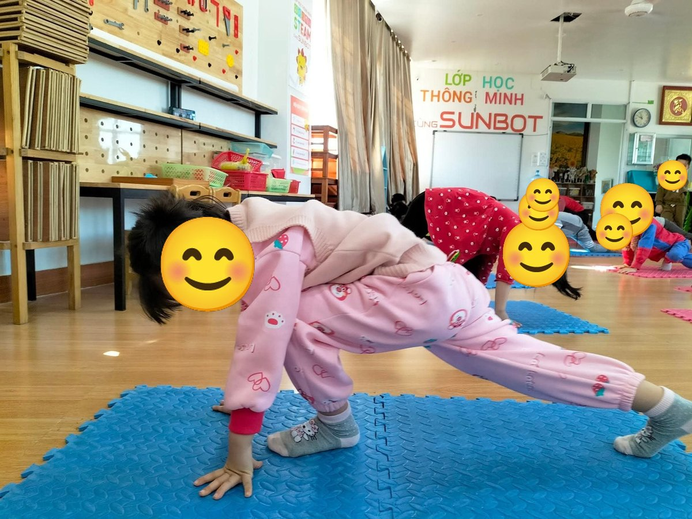
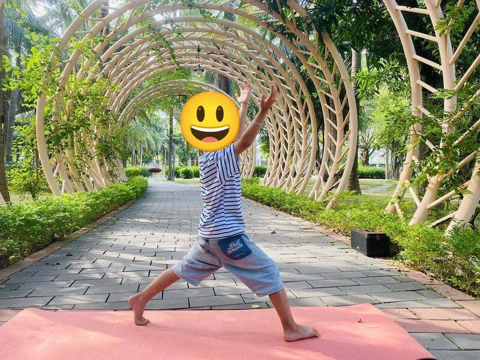
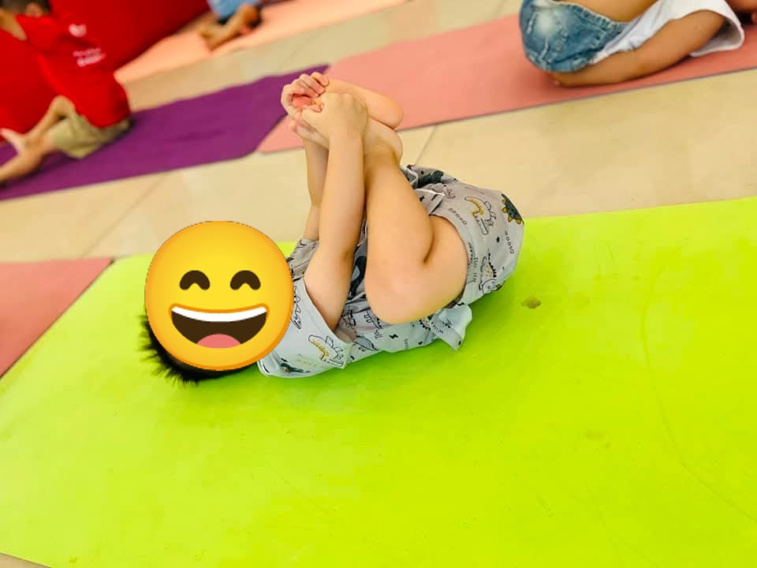
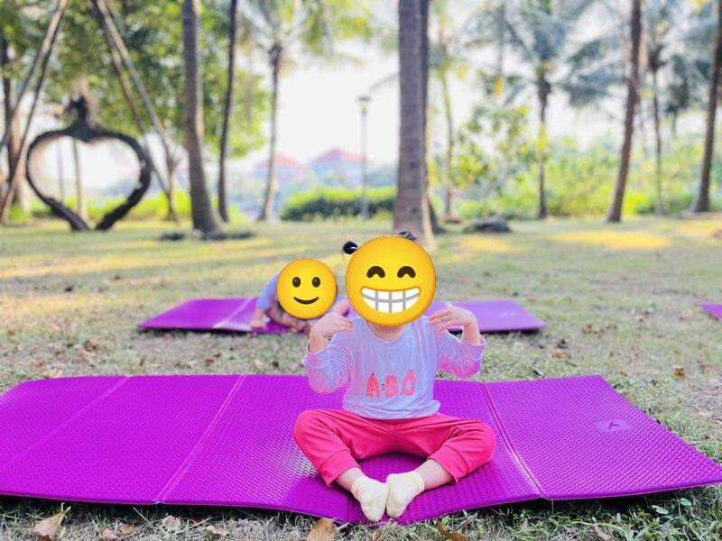
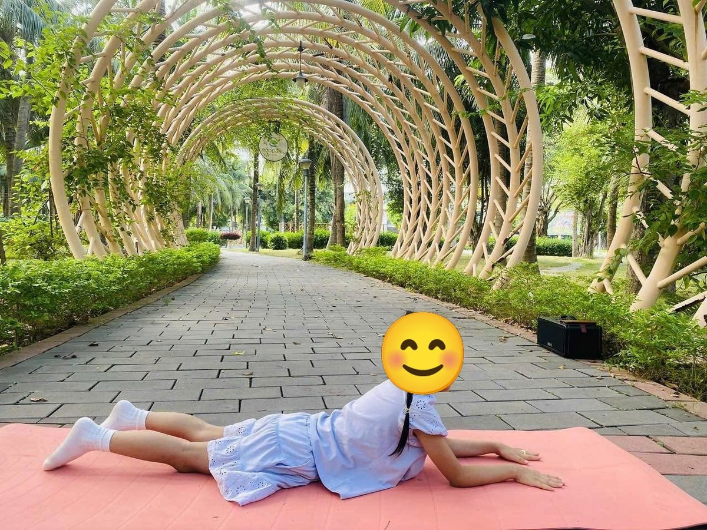

Chủ đề 25 · Nông trại vui vẻ
Bù Nhìn Rơm ở nông trại
🌟 Bài học trong câu chuyện
Giới luật yoga: Tapas – Kiên trì, cố gắng. Bé không bỏ cuộc, thử lại từng chút một.
Kỹ năng sống: Chăm chỉ làm việc, giúp đỡ nhau.
1. Khởi động (2 phút)
Cả lớp ngồi xếp bằng thành vòng tròn. Cùng thở 3 hơi thở bông hoa: hít vào bằng mũi như ngửi hoa, thở ra bằng miệng thật chậm. Chắp tay trước ngực và chào nhau: “Namaste, chào các bạn!”
2. Câu chuyện: Bù Nhìn Rơm ở nông trại (đọc cho bé nghe, 4 phút)
Cô đọc trọn câu chuyện cho bé nghe trước. Sau đó cô kể lại từng đoạn ngắn và cả lớp cùng tập 10 tư thế ở phần bên dưới.
Ở nông trại của bác Nông Dân có cô Bò Sữa, anh Ngựa, bạn Cừu, bạn Dê, bác Trâu, Gà Mái, Vịt và Heo Con. Mùa gặt đến, ai cũng tất bật làm việc.
Cô Bò thức dậy từ sớm: "Ò ò, mình cho sữa đây". Anh Ngựa kéo xe chở lúa về kho: "Hí hí!". Bạn Cừu cho bộ lông ấm để may áo mùa đông. Bạn Dê leo lên đồi cao tìm cỏ, bước từng bước khó nhọc nhưng không dừng lại.
Chỉ có Heo Con là nằm lăn trong vũng bùn: "Ụt ịt, làm việc mệt lắm, mình không làm đâu!"
Heo Con nhìn quanh. Bác Trâu cày ruộng từ sáng đến chiều, không một lời kêu ca. Gà Mái ngồi ấp trứng kiên nhẫn cả ngày. Vịt bơi ra ao bắt ốc. Heo Con bỗng thấy đỏ mặt, cuộn tròn người lại suy nghĩ.
Heo Con đứng dậy, chạy đến chỗ bác Bù Nhìn Rơm giữa ruộng: "Cháu giúp bác đuổi chim ăn lúa nhé!". Heo dang tay chạy khắp ruộng, đàn chim bay đi hết. Cuối mùa, lúa đầy kho. Cả nông trại mở tiệc, bác Nông Dân khen Heo Con chăm chỉ nhất ngày cuối. Heo Con cười tít mắt: "Làm việc cùng mọi người vui hơn nằm một mình!"
3. Kể lại và tập 10 tư thế (6 phút)
-
 1
1Con bò
🧘 Tư thế Mèo bò (Cat-Cow)
Lời kể khi tập: Bò Sữa thức dậy: "Ò ò, mình cho sữa đây".
Cách làm: Chống tay và gối, hít vào võng lưng ngẩng đầu (bò "ò ò"), thở ra cong lưng cúi đầu (mèo "meo"). Giữ 3 đến 5 nhịp thở.
-

2Con ngựa
🧘 Tư thế Ngựa phi (Galloping Horse)
Lời kể khi tập: Ngựa kéo xe chở lúa: "Hí hí!" Mình làm ngựa phi thật vững.
Cách làm: Một chân bước dài ra trước, gập gối, chân sau duỗi thẳng, hai tay chống xuống thảm hai bên chân trước như chú ngựa đang phi. Giữ 3 đến 5 nhịp thở.
-
 3
3Con cừu
🧘 Tư thế Em bé (Child's Pose)
Lời kể khi tập: Cừu cho bộ lông ấm. "Be be".
Cách làm: Quỳ gối, ngồi lên gót chân, cúi người cho trán chạm thảm, hai tay duỗi ra trước hoặc để xuôi bên người. Giữ 3 đến 5 nhịp thở.
-

4Dê leo núi
🧘 Tư thế Chiến binh 1 (Warrior 1)
Lời kể khi tập: Dê leo lên đồi tìm cỏ, bước từng bước khó nhọc.
Cách làm: Một chân bước dài ra trước, gối trước hơi gập, chân sau thẳng, hai tay vươn lên cao. Giữ 3 đến 5 nhịp thở.
-

5Heo con lăn bùn
🧘 Tư thế Em bé vui (Happy Baby)
Lời kể khi tập: Heo Con chỉ thích lăn bùn: "Ụt ịt, mình không thích làm việc!"
Cách làm: Nằm ngửa, co hai chân lên, tay nắm bàn chân, lắc lư qua lại. Giữ 3 đến 5 nhịp thở.
-
 6
6Trâu cày ruộng
🧘 Tư thế Cái bàn (Table Top)
Lời kể khi tập: Bác Trâu cày ruộng cả ngày, không kêu ca.
Cách làm: Chống hai tay dưới vai, hai gối dưới hông, lưng phẳng như mặt bàn. Giữ 3 đến 5 nhịp thở.
-

7Gà mái ấp trứng
🧘 Tư thế Gà con vỗ cánh (Chicken Wings)
Lời kể khi tập: Gà Mái xòe cánh ấp trứng kiên nhẫn.
Cách làm: Ngồi xếp bằng, hai bàn tay đặt lên vai, khuỷu tay vỗ lên xuống như cánh gà. Giữ 3 đến 5 nhịp thở.
-

8Vịt bơi
🧘 Tư thế Châu chấu (Locust)
Lời kể khi tập: Vịt bơi ra ao bắt ốc.
Cách làm: Nằm sấp, nhấc đầu và ngực lên, hai tay chống nhẹ trước mặt, chân duỗi thẳng ra sau (bé lớn có thể nhấc cả chân lên). Giữ 3 đến 5 nhịp thở.
-
 9
9Chuột đồng cuộn tròn
🧘 Tư thế Ôm gối tròn (Ball)
Lời kể khi tập: Heo Con thấy ai cũng chăm chỉ, Heo đỏ mặt cuộn tròn suy nghĩ.
Cách làm: Ngồi hoặc nằm, ôm hai gối sát vào ngực, cuộn tròn người như quả bóng. Giữ 3 đến 5 nhịp thở.
-
 10
10Bù nhìn rơm
🧘 Tư thế Ngôi sao (Star)
Lời kể khi tập: Heo Con cùng Bù Nhìn đuổi chim ăn lúa. Cuối mùa, cả nông trại vui vẻ ăn mừng!
Cách làm: Đứng dang rộng hai chân, hai tay dang ngang thật thẳng, cả người thành ngôi sao năm cánh. Giữ 3 đến 5 nhịp thở.
4. Thư giãn (2 phút)
Các con nằm ngửa, tay chân thả lỏng, nhắm mắt lại. Cô nói nhẹ: “Hít vào thật chậm… thở ra thật chậm… Con nhớ lại câu chuyện vừa rồi, nhớ người bạn mình thích nhất trong truyện. Cơ thể con mềm như bông, nhẹ như mây.” Sau đó các con nghiêng người, từ từ ngồi dậy.
5. Trò chuyện cùng bé (1 phút)
Ai trong nông trại cũng chăm chỉ làm việc, Heo Con cũng học cách cố gắng. Chăm chỉ, kiên trì là Tapas.
Cô hỏi các con:
- Con bò cho ta cái gì?
- Ở nhà con chăm chỉ làm việc gì?
Kết thúc bằng lời chào “Namaste” và một nụ cười.
Lưu ý cho thầy cô và bố mẹ: Tập trên thảm, không tập ngay sau khi ăn no. Bé chỉ làm tới mức thấy dễ chịu, không ép bé. Tư thế đứng một chân có thể cho bé vịn tường hoặc vịn tay người lớn.